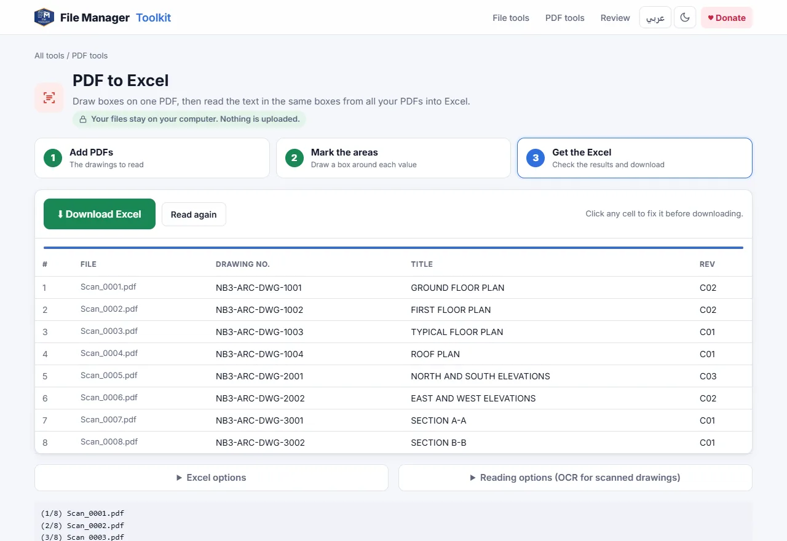

Free drawing register template for Excel
A ready drawing register in Excel, with revision history, ISO 19650 status codes and a duplicate check. Download it free, or let the tool fill it from the title blocks of your PDF drawings.
Short answer
Download the template above and type one drawing per row. If your drawings are already PDFs, open PDF to Excel instead: draw a box around the drawing number, the title and the revision once, and it reads them from every sheet into an Excel register for you.
What is in the template
- A project header: project name, number, client, who prepared it and when it was last updated.
- One row per drawing: drawing number, title, discipline, sheet size, scale, current revision, revision date and remarks.
- A Status column with ISO 19650 codes (S0 to S4, A1 to A3) and an Issue purpose column, both as drop-down lists.
- Revision history columns (P01, P02, C01) for the date of each issue. Add more columns as the project goes on.
- A drawing count at the top, a frozen header, filters on every column, and duplicated drawing numbers shaded orange.
- Print-ready: landscape, fitted to the page width, with the header repeated on every printed page.
What a drawing register is for
A drawing register is the list of every drawing on a project with its current revision and status. The design team uses it to know what is issued, the contractor uses it to check they build from the latest revision, and the document controller attaches it to every transmittal. Keeping it right matters more than keeping it pretty: one wrong revision in the register means someone builds from an old drawing.
Step by step
Download the template
Click Download the template. It opens in Excel, LibreOffice or Google Sheets. Fill in the project header at the top.
Replace the example row
The yellow row shows the expected format. Overwrite it with your first drawing, then add one row per drawing below it.
Or fill it from the PDFs
Open PDF to Excel, add your PDF drawings and drag a box around the drawing number, title and revision on one sheet. Each box gets its column name by itself. Click Next to read every PDF.
Paste into the template
Download the Excel file and paste each column under the matching heading of the template: drawing numbers under Drawing No., titles under Drawing title, revisions under Current rev.
Update it at every issue
When you issue a new revision, update Current rev and Rev date and add the date under that revision's column, so the history stays in one row.

Tips for a register people trust
- Use the same drawing numbers as the file names and the title blocks. Rename from Title Block can fix file names that do not match.
- Never delete a superseded drawing from the register: change its status to superseded and say what replaces it in Remarks.
- Before every issue, run the Pre-flight Check: it compares the register with the PDFs and finds missing sheets and revisions that do not match.
- Keep one register per project, not one per discipline, so the totals and the duplicate check cover everything.
Already have the PDFs?
Free, runs in your browser, and your drawings never leave your computer.
Open PDF to Excel →Questions
Is the drawing register template free?
Yes. Download it and use it on any project, with no sign up. It is a normal .xlsx file with no macros.
Does it work in Google Sheets?
Yes. Upload the file to Google Drive and open it with Google Sheets. The drop-down lists, filters and the duplicate check keep working.
What do the status codes S0 to S4 mean?
They are ISO 19650 suitability codes: S0 work in progress, S1 for coordination, S2 for information, S3 for review and comment, S4 for stage approval. A1 to A3 mean authorised for construction.
Can I fill the register automatically from my drawings?
Yes. PDF to Excel reads the drawing number, title and revision from the title block of every PDF, including scanned ones with OCR, and gives you the rows ready to paste.
What is the difference between a drawing register and a transmittal?
The register lists every drawing on the project and its latest revision. A transmittal lists only the documents sent in one issue, to one recipient, on one date.